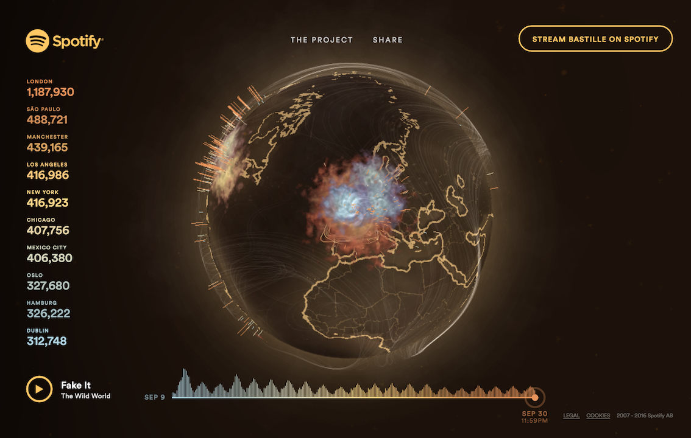
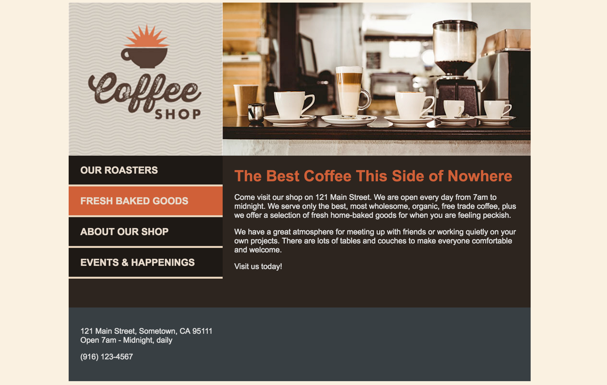

Bastille - Eye of the Stormers
I immediately felt that the hierarchy was well prioritized, as the large, centered word “BASTILLE” was the reason for me clicking on and using this site for my first blog post. Titled, “Bastille: Eye Of The Stormers (appropriately named after the band’s fanbase), the first page is extremely simple—it provides a clear focus (Bastille), links to Spotify (the company who created the website) and a quick and easy way to stream the band’s new album. Most importantly, centered beneath the title, there is a link to the interactive site. As soon as you enter the site, it also greats you with a new song from their album, apparently chosen at random.
The visuals in the background are extremely beautiful, reminiscent of a fire with embers floating into the night. Another subtle but extremely satisfying detail found in the background is the interactivity. As you move the mouse around the page, the embers or dust particles are pushed around as if your cursor is blowing them away.
The colors are visually pleasing and fit perfectly with their first album, Bad Blood which was predominantly brown with various shades of gold. Their new album (which the promotion of, I assume, is the reason behind the site) has many browns and gold tones however also a large amount of blue and grey. To make the website feel like it is more for their latest release, using more blue/grey would have been a good idea.
Upon clicking on the main link and entering further into the site, I found that they did indeed feature a blue/grey tone. On the left hand side of the site page there is a list of statistics featuring major cities around the world and the number of times each city has listened to the album ordered from highest number of streams to the lowest. The city furthest down on the list is featured in the blue grey color previously mentioned. This brings up yet another issue I have with the site. The blue really pops out against the other colors used on the site, however they use it to highlight the cities that are lowest on the list. It would have been much more successful if they use the bright blue to direct attention to the cities who have streamed the album the most.
Being that I am a big Bastille fan, I knew that these colors matched the band’s aesthetic and color theme well; however for someone who is not familiar with the band, they might find the colors to give the website and features a polluted and dirty feel. Especially when actually entering the site and being presented with a interactive, three-dimensional globe, the brown and dusty look make the earth appear polluted.
The interactive earth is a fantastic visual that really hooked me into the site. The user is able to click and hold the earth and discover storms varying in size, representing the cities who have listened to the album the most, and thus, brought on a large “storm” over their city.
BLOG POST 2 | 10.10.16Coffee Roaster Page Assignment
I was excited to find that as we made our way through the Coffee Shop website exercise as a class, I was understanding each and every code we put into place. It seems to me that in order to be a coder, one important aspect is to remember elements and their assets, and remember the order to place everything. Once I completed the Coffee Shop home page without any bumps, we were told to then create the "Our Roasters'' page on our own. Although I had found the Coffee Shop page to be fairly easy, I suddenly believed the ease to have been due to the fact that we were all following the lead of my professor. I felt there was no way I could do it on my own.
I quickly discovered that would not be the case. As soon as I started typing , all the other code started coming back to me and I quickly finished the basic html code. Once I got the the CSS, I got a little worried again. I slowly began typing the CSS, but before I got too far, realized something that would save me a lot of time: the CSS for the "Our Roasters" page was the same as the CSS for the home page. I quickly copied and pasted the CSS link and finalized the page by adding the appropriate picture tag, and was finished. I was super excited about the whole ordeal (no sarcasm).